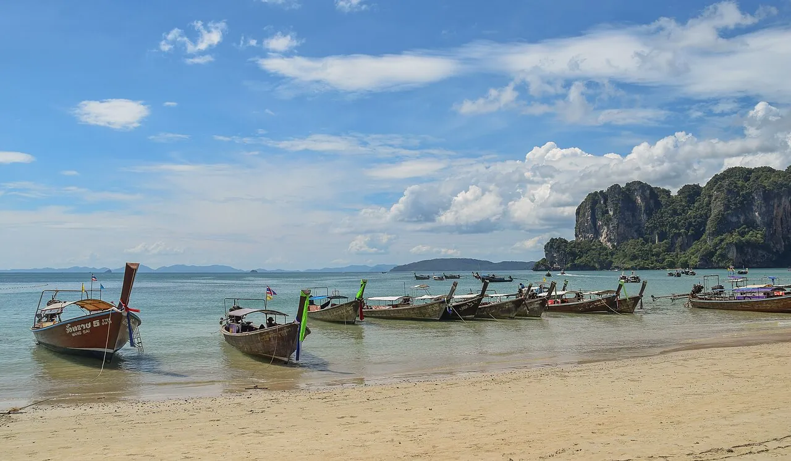

Railay
Krabi, Thaïlande · kayak, baignade, snorkeling

Presqu’île accessible seulement en bateau, entourée de falaises calcaires. Kayak entre les pitons et plages de rêve.
- Lieu
- Krabi, Thaïlande
- Niveau
- Débutant
- Activités
- kayak, baignade, snorkeling
- Type d'eau
- Mer / océan
- Coordonnées
- 8.01, 98.84 (position approximative du secteur)
Dangers à connaître
- Bateaux longtail nombreux.
- Corail près des falaises.
Le conseil d'Ocean Buddy
Explore les grottes en kayak le matin, avant l’afflux des bateaux.
Ouvrir dans Ocean Buddy Télécharger sur l'App Store
Source : Fiche Ocean Buddy · septembre 2026 · à vérifier localement.